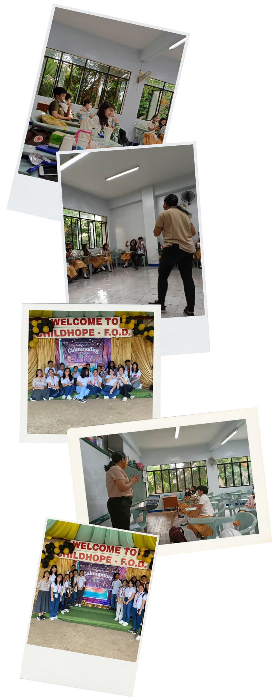
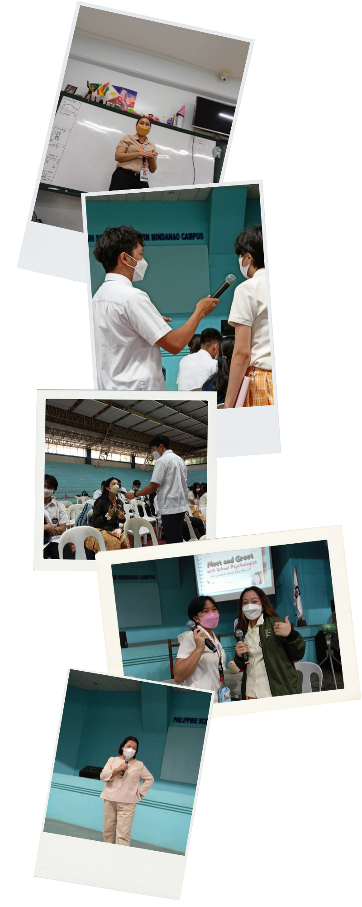
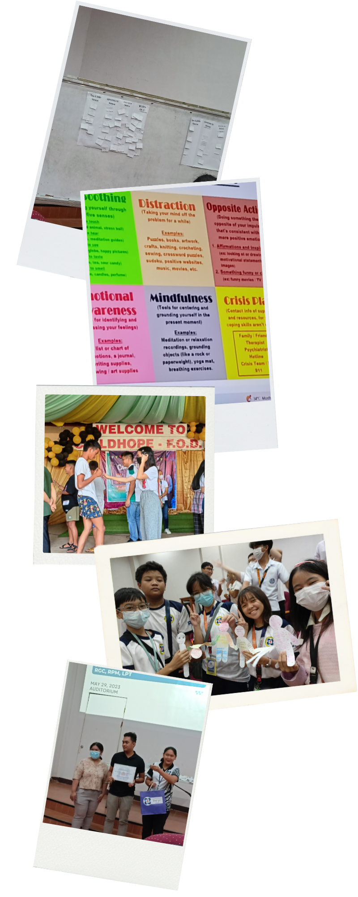

Peer Facilitators are the ones who hosts special events and seminars regarding Mental Health, such as the World Mental Health Day.
Initiatives

Peer Facilitators served as the frontliners of the guidance unit, therefore they are involved in the some of the matters of the scholars.
Peer Facis are sometimes tasked to check upon those who are troubled.
We are also here to listen if ever the student or scholar feels it more comfortable to share their problems on a peer.
Involvements
Peer Facis are sometimes tasked to check upon those who are troubled.
We are also here to listen if ever the student or scholar feels it more comfortable to share their problems on a peer.

Before becoming an official Peer Facilitator, they undergo a training and will later on have a peer culmination.
They host the talks with regards to the Mental Health of scholars.
Peer Facilitators also participates in the activities that are being held, such as yoga during the afternoon.
Activities and Participation
They host the talks with regards to the Mental Health of scholars.
Peer Facilitators also participates in the activities that are being held, such as yoga during the afternoon.